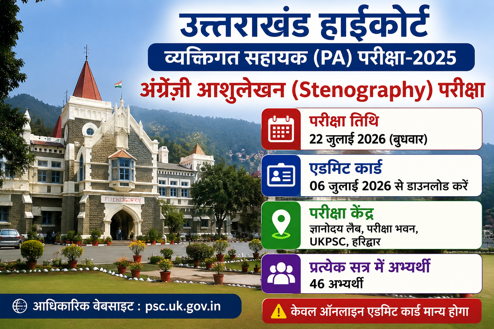

यदि आपने Uttarakhand High Court Personal Assistant Examination 2025 के लिए आवेदन किया है, तो यह अपडेट आपके लिए बेहद महत्वपूर्ण है। आयोग ने परीक्षा तिथि, प्रवेश पत्र और परीक्षा केंद्र से संबंधित विस्तृत जानकारी जारी कर दी है।
| Particular | Details |
|---|---|
| Recruiting Authority | Uttarakhand Public Service Commission (UKPSC) |
| Department | Uttarakhand High Court |
| Post Name | Personal Assistant (PA) |
| Examination | English Stenography Practical Test |
| Exam Date | 22 July 2026 |
| Admit Card | 06 July 2026 |
| Exam Mode | Offline + Computer Based Transcription |
| Exam Centre | Gyanodaya Lab, UKPSC Campus, Haridwar |
| Official Website | psc.uk.gov.in |
उत्तराखंड लोक सेवा आयोग (UKPSC) ने उत्तराखंड हाईकोर्ट Personal Assistant (PA) English Stenography Practical Examination 2025 का Admit Card जारी कर दिया है। पात्र अभ्यर्थी आयोग के Login Portal से अपना Admit Card डाउनलोड कर सकते हैं। यह परीक्षा 22 जुलाई 2026 को आयोजित होगी।
यह परीक्षा केवल आशुलेखन गति ही नहीं बल्कि उम्मीदवार की टाइपिंग दक्षता, शुद्धता (Accuracy) तथा कंप्यूटर पर ट्रांसक्रिप्शन क्षमता का भी मूल्यांकन करेगी। आयोग ने परीक्षा के दौरान पालन किए जाने वाले नियमों, प्रतिबंधित Shortcut Keys तथा त्रुटि सीमा से संबंधित महत्वपूर्ण निर्देश भी जारी किए हैं।
यदि आप इस परीक्षा में शामिल होने जा रहे हैं, तो सलाह दी जाती है कि परीक्षा से पहले आधिकारिक दिशा-निर्देशों को ध्यानपूर्वक पढ़ें तथा Admit Card डाउनलोड करने के बाद उसमें अंकित सभी विवरणों का मिलान अवश्य कर लें।
| Event | Date |
|---|---|
| Admit Card Release | 06 July 2026 |
| English Stenography Practical Exam | 22 July 2026 |
| First Session Starts | 10:00 AM |
| Second Session Starts | 02:00 PM |
| Session | Time | Candidates |
|---|---|---|
| First Session | 10:00 AM | 46 |
| Second Session | 02:00 PM | 46 |
उत्तराखंड हाईकोर्ट Personal Assistant (PA) भर्ती-2025 के अंतर्गत आयोजित होने वाली अंग्रेज़ी आशुलेखन परीक्षा उम्मीदवारों की Stenography Skill, Typing Accuracy तथा Computer Transcription क्षमता का परीक्षण करेगी। आयोग द्वारा जारी दिशा-निर्देशों के अनुसार परीक्षा निर्धारित समय और नियमों के अंतर्गत आयोजित की जाएगी।
| Particular | Details |
|---|---|
| Exam Type | English Stenography Practical Test |
| Total Marks | 120 Marks |
| Dictation Duration | 07 Minutes |
| Approximate Words | 700 Words |
| Transcription Time | 45 Minutes |
| Typing Font | Times New Roman |
परीक्षा की शुरुआत एक मिनट के डेमो डिक्टेशन से होगी ताकि उम्मीदवार परीक्षा प्रक्रिया को समझ सकें। इसके बाद सात मिनट तक अंग्रेज़ी डिक्टेशन सुनाया जाएगा। डिक्टेशन पूरा होने के बाद अभ्यर्थियों को कंप्यूटर पर निर्धारित समय के भीतर उसका ट्रांसक्रिप्शन करना होगा।
ट्रांसक्रिप्शन करते समय उम्मीदवारों को गति के साथ-साथ Accuracy का भी विशेष ध्यान रखना होगा क्योंकि अंतिम मूल्यांकन दोनों के आधार पर किया जाएगा।
परीक्षा की निष्पक्षता बनाए रखने के लिए आयोग ने कुछ Keyboard Shortcut Keys के उपयोग पर पूर्ण प्रतिबंध लगाया है। यदि कोई उम्मीदवार इनका उपयोग करता हुआ पाया जाता है तो उसके विरुद्ध नियमानुसार कार्रवाई की जा सकती है।
| Restricted Keys | Status |
|---|---|
| Alt + Tab | Not Allowed |
| Alt + F4 | Not Allowed |
| Ctrl + F4 | Not Allowed |
| Ctrl + Esc | Not Allowed |
| Ctrl + Alt + Delete | Not Allowed |
| Alt + Esc | Not Allowed |
| Alt + Space | Not Allowed |
| Windows Key | Not Allowed |
| Right Click | Disabled |
आयोग द्वारा जारी दिशा-निर्देशों के अनुसार Stenography Test में निर्धारित सीमा से अधिक त्रुटियाँ होने पर उम्मीदवार को अयोग्य घोषित किया जा सकता है। इसलिए केवल तेज गति ही नहीं बल्कि सही एवं शुद्ध टाइपिंग भी अत्यंत आवश्यक है।
परीक्षा से पहले प्रतिदिन English Dictation का अभ्यास करें और कम से कम 45 मिनट का Computer Transcription Practice अवश्य करें। Accuracy सुधारने के लिए छोटे-छोटे Paragraph टाइप करें तथा Typing Speed और Spellings पर विशेष ध्यान दें।
उत्तराखंड हाईकोर्ट Personal Assistant (PA) परीक्षा-2025 के अंतर्गत आयोजित होने वाली English Stenography Practical Test भर्ती प्रक्रिया का महत्वपूर्ण चरण है। जिन उम्मीदवारों ने इस परीक्षा के लिए आवेदन किया है, वे 06 जुलाई 2026 से अपना Admit Card डाउनलोड कर लें और 22 जुलाई 2026 को निर्धारित परीक्षा केंद्र पर समय से पहुँचें। परीक्षा के दौरान आयोग द्वारा जारी सभी दिशा-निर्देशों का पालन करना अनिवार्य होगा।
यह परीक्षा 22 जुलाई 2026 (बुधवार) को आयोजित की जाएगी।
Admit Card 06 जुलाई 2026 से डाउनलोड किया जा सकेगा।
ज्ञानोदय लैब, परीक्षा भवन, उत्तराखंड लोक सेवा आयोग (UKPSC), हरिद्वार।
डिक्टेशन की अवधि 07 मिनट होगी।
उम्मीदवारों को 45 मिनट का समय दिया जाएगा।
Computer Transcription केवल Times New Roman Font में करनी होगी।
नहीं। आयोग द्वारा कई Shortcut Keys प्रतिबंधित की गई हैं।
उम्मीदवार UKPSC Login Portal पर Email ID/Password या Application Number एवं Date of Birth से Login करके Admit Card डाउनलोड कर सकते हैं।
उम्मीदवार Email ID एवं Password या Application Number और Date of Birth के माध्यम से Login करके Admit Card डाउनलोड कर सकते हैं।
| Particular | Link |
|---|---|
| Official Website | Visit Website |
| Download Admit Card | Download Admit Card |